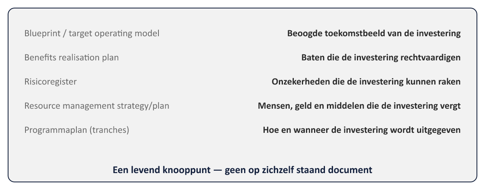
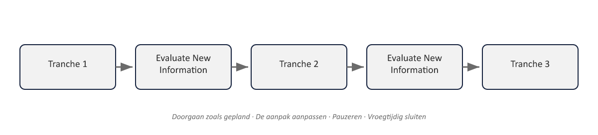

Sheet 1Titel
Project- en Programmamanagement
Niveau 2 · Deel 13: Business case en investeringsbesluiten
Sheet 2Justification
MSP’s tegenhanger van PRINCE2’s Business Case
Zelfde kernvraag: desirable, viable, achievable
Sheet 3Op programmaschaal
- Desirable: ook gepercipieerde waarde voor stakeholders
- Viable: balans haalbaarheid ↔ betaalbaarheid, over jaren
- Achievable: realistisch gegeven enablers en business changes
Sheet 4Vijf bouwstenen

Sheet 5Een knooppunt, geen op zichzelf staand document
Elke wijziging in een bouwsteen werkt automatisch door
Sheet 6De investeringsbeslissing
Kwantificeren waar mogelijk → toleranties
Precisie groeit naarmate het programma vordert
Sheet 7Herijking: tranches, niet fasen

Via het proces Evaluate New Information
Sheet 8Vier besluiten
1. Doorgaan zoals gepland
2. Aanpak aanpassen
3. Pauzeren
4. Vroegtijdig sluiten
Sheet 9Pauzeren is geen zwaktebod
Een volwaardige optie — extra nuance t.o.v. PRINCE2’s doorgaan/stoppen
Sheet 10PRINCE2 vs. MSP: de business case
| PRINCE2 (project) | MSP (programma) | |
|---|---|---|
| Kernvraag | Desirable, viable, achievable | Desirable, viable, achievable |
| Herijkingsmoment | Bij faseovergangen (Managing a Stage Boundary, deel 8) | Bij tranche-overgangen (Evaluate New Information) |
| Aard van het document | Op zichzelf staand, met een vast ontwikkelpad (outline→detailed→updated→verified) | Samengesteld uit andere programmadocumenten, groeit organisch in nauwkeurigheid |
| Uitkomst bij herijking | Doorgaan of stoppen | Doorgaan, aanpassen, pauzeren, of vroegtijdig sluiten |
| Eigenaar | Executive | SRO, met input van sponsoring group |
Sheet 11Toegepast: Programma Mutatieplatform
Blueprint van de toekomstige mutatieketen
Eerste tranche zekerder dan latere tranches
Business case scherper bij elke Evaluate New Information-stap
Sheet 12Vooruitblik
Deel 14: programma-organisatie en governance verdiept — SRO, board, Business Change Manager